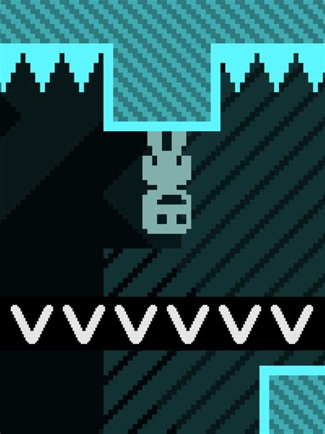

My Master's Thesis
My thesis Adaptive Checkpoints for Flow State Optimization in Video Games was written for my Master of Science in Game Technology at the Breda University of applied sciences. This thesis investigates checkpoints as an adaptive element within a Dynamic Difficulty Adjustment system. Grounded in Flow Theory, participant flow was measured using the Flow Short Scale to assess whether adaptive checkpoints can better support player flow across diverse player experience levels. Below the thesis is the research poster which summarizes the process and findings.
The game experiment for this research is based on the 2010 indie platformer VVVVVV by Terry Cavanagh (see the image to the right). For its 10th anniversary, Cavanagh made the game open source on GitHub, allowing me to implement the DDA system and telemetry directly in C++.
The source code for the game experiment, along with the participant data and Jamovi data analysis files, are available on my GitHub.

Research Poster
This poster displays the key takeaways of my research. The poster's visual elements are inspired by and credited to the aesthetic of VVVVVV by Terry Cavanagh.